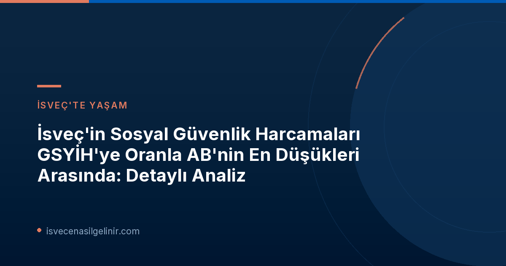

İsveç'in Sosyal Güvenlik Harcamalarında Dikkat Çeken Düşüş
İsveç, yıllar içinde sosyal güvenlik harcamalarında GSYİH'ye oranla önemli bir düşüş kaydetti. 1995 yılında GSYİH'nin %19,1'ini oluşturan bu harcamalar, 2024 yılına gelindiğinde %14,2'ye geriledi. Bu oran, AB-15 ülkeleri arasında yalnızca İrlanda'dan sonra en düşük ikinci seviyeyi temsil ediyor.
İsveç'in Sosyal Güvenlik Harcamaları (GSYİH Oranı)
| Yıl | GSYİH Oranı |
|---|---|
| 1995 | %19,1 |
| 2024 | %14,2 |
Rakamlarla Değişim: Nominal ve Reel Artışlar
GSYİH'ye oranla düşüş yaşanmasına rağmen, reel terimlerle bakıldığında sosyal güvenlik harcamaları artış göstermiştir. 1995 yılında 592 milyar İsveç Kronu (SEK) olan harcamalar, 2024 yılında 904 milyar SEK'e yükseldi. Bu artışın temel nedeni ise emeklilik ödemelerindeki yükseliştir.
Bu Düşüşün Arkasındaki Temel Nedenler
İsveç'in sosyal güvenlik harcamalarının GSYİH içindeki payının düşmesindeki ana faktör, ülkenin ekonomik büyüme hızının, harcamaların artış hızını geride bırakmasıdır. 1995 ile 2024 yılları arasında İsveç'in GSYİH'si reel olarak %87 oranında artarken, sosyal güvenlik harcamaları %53 oranında yükselmiştir. Bu oran farkı, harcama payındaki azalmanın temelini oluşturmaktadır.
Uzman Görüşü
Försäkringskassan analisti Johan Olofsson'un belirttiği gibi: "İsveç'in azalan harcama oranı, ekonomide, nüfusta ve sosyal güvenlik sistemlerimizde eş zamanlı olarak meydana gelen çeşitli değişikliklerden kaynaklanmaktadır. Bu, hem sosyal güvenlik mevzuatındaki değişiklikleri hem de GSYİH'nin ne kadar büyüdüğünü kapsamaktadır."
Bu düşüşte, sosyal güvenlik sistemi içerisindeki düzenlemeler ve ülkenin genel ekonomik performansının büyük etkisi bulunmaktadır. Düzenlemeler, sistemin daha sürdürülebilir hale gelmesini hedeflerken, güçlü ekonomik büyüme de GSYİH'nin harcamalardan daha hızlı genişlemesini sağlamıştır.
EU-15 Ülkeleri Arasında İsveç'in Konumu ve Diğer Örnekler
İsveç'teki harcama oranındaki azalma, karşılaştırılan EU-15 ülkeleri arasında en büyüğüdür. Aşağıdaki tabloda, bu düşüşü yaşayan diğer ülkelerle birlikte İsveç'in konumu gösterilmektedir:
Sosyal Güvenlik Harcamaları Oranında En Büyük Düşüş Yaşayan EU-15 Ülkeleri (1995-2024)
| Ülke | Değişim Oranı |
|---|---|
| İsveç | -%5,1 |
| İrlanda | -%4,3 |
| Danimarka | -%4,3 |
| Hollanda | -%3,3 |
| Finlandiya | -%3,0 |
Johan Olofsson, bu durumu değerlendirirken, "İsveç'in göreceli konumu sadece İsveç'teki gelişmelerle değil, aynı zamanda çevremizdeki gelişmelerle de alakalıdır. Harcama oranında en büyük artışı yaşayan ülkelerin, diğer ülkelere göre daha kötü bir GSYİH gelişimi göstermesi, bu durumu desteklemektedir." yorumunu yaptı.
EU-15 ülkeleri: Belçika, Danimarka, Finlandiya, Fransa, Yunanistan, İrlanda, İtalya, Lüksemburg, Hollanda, Portekiz, İspanya, Büyük Britanya, İsveç, Almanya ve Avusturya.
İsveç Vatandaşlığı ve Sosyal Güvenlik Sistemi İlişkisi
İsveç'in sosyal güvenlik sisteminin evrimi, ülkedeki vatandaşlar ve daimi ikamet edenler için önemli sonuçlar doğurmaktadır. Sosyal sigorta ödenekleri, sağlık hizmetleri, emeklilik hakları ve diğer sosyal yardımlar, bu sistemin temel taşlarını oluşturur. Sistemdeki değişiklikler, İsveç'te yaşayan herkesin yaşam kalitesi ve ekonomik güvencesi üzerinde doğrudan bir etkiye sahiptir. İsveç vatandaşlık sürecine hazırlanan kişiler veya hali hazırda vatandaş olanlar için bu tür ekonomik göstergeleri takip etmek, ülkenin genel refah seviyesini ve sosyal politikalarını anlamalarına yardımcı olacaktır. sverigemedborgarskapsprov.com adresinden İsveç vatandaşlık testine dair güncel bilgilere ulaşabilirsiniz.
Geleceğe Yönelik Çıkarımlar ve Beklentiler
İsveç'in sosyal güvenlik harcamalarının GSYİH'ye oranla düşüş eğilimi, ülkenin ekonomik dinamiklerinin ve refah devleti anlayışının nasıl evrildiğini göstermektedir. Bu durum, daha verimli bir sosyal güvenlik yönetimi arayışını ve ekonomik büyümeyi teşvik etme çabasını yansıtabilir. Önümüzdeki dönemlerde, bu trendin devam edip etmeyeceği ve sosyal hizmetlerin kalitesi üzerindeki potansiyel etkileri yakından izlenmelidir.
Referanslar:
- Försäkringskassan - Sveriges socialförsäkringsutgifter som andel av BNP är näst lägst i EU
- sverigemedborgarskapsprov.com
İsveç'te Yaşam ve Vatandaşlık Hakkında Daha Fazla Bilgi Edinin
İsveç'in sosyal ve ekonomik yapısına dair en güncel bilgilerle geleceğinize yön verin. İsveç'te yaşam, çalışma ve vatandaşlık süreçleri hakkında kapsamlı rehberlerimize göz atın.